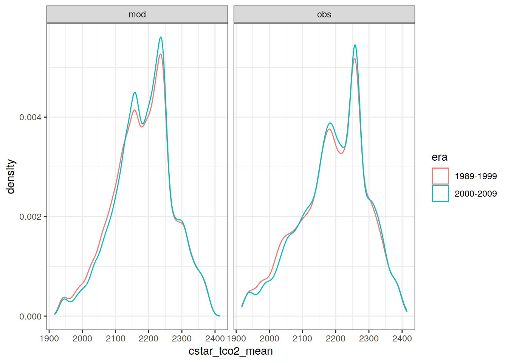
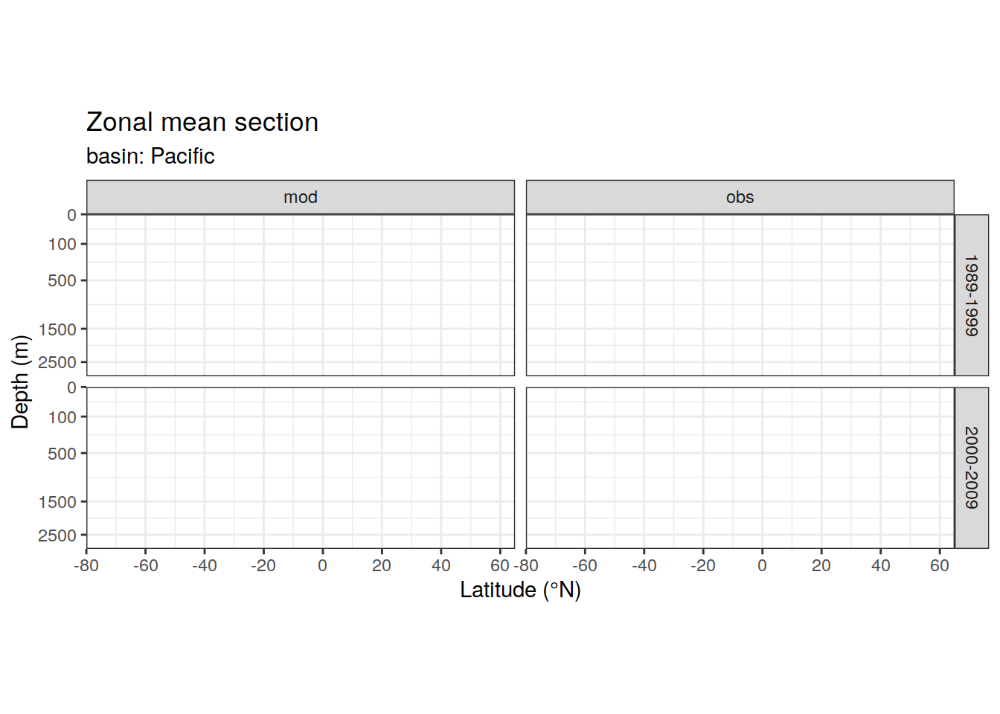
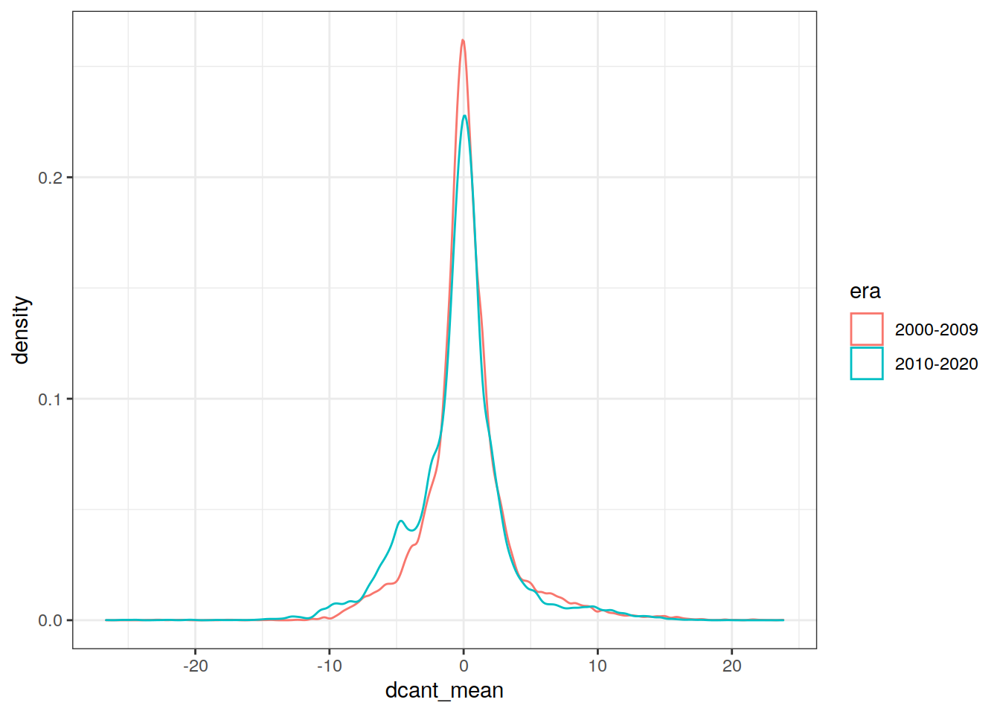
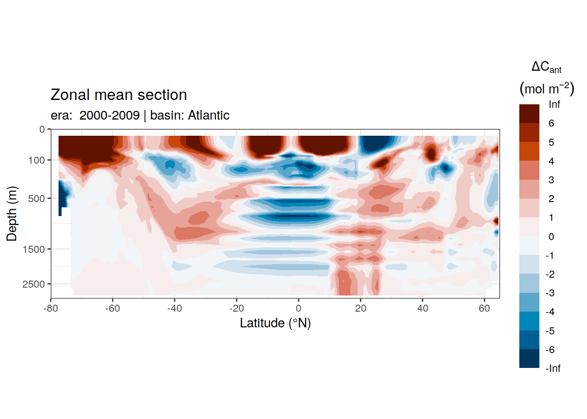
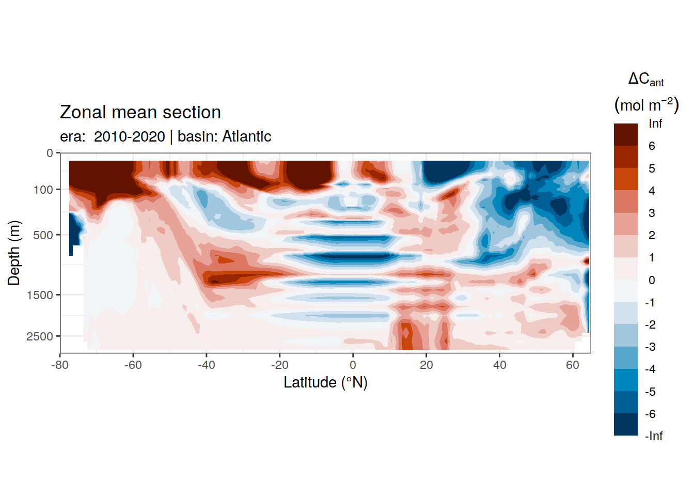
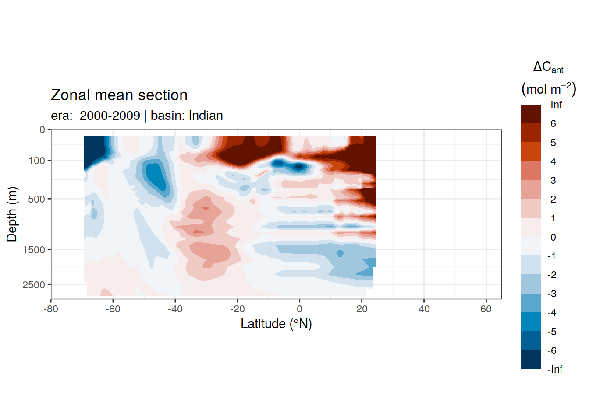
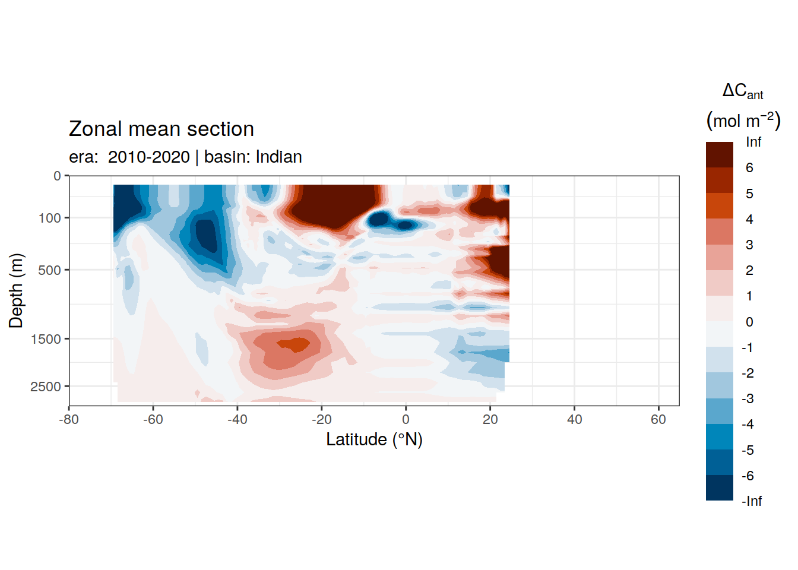
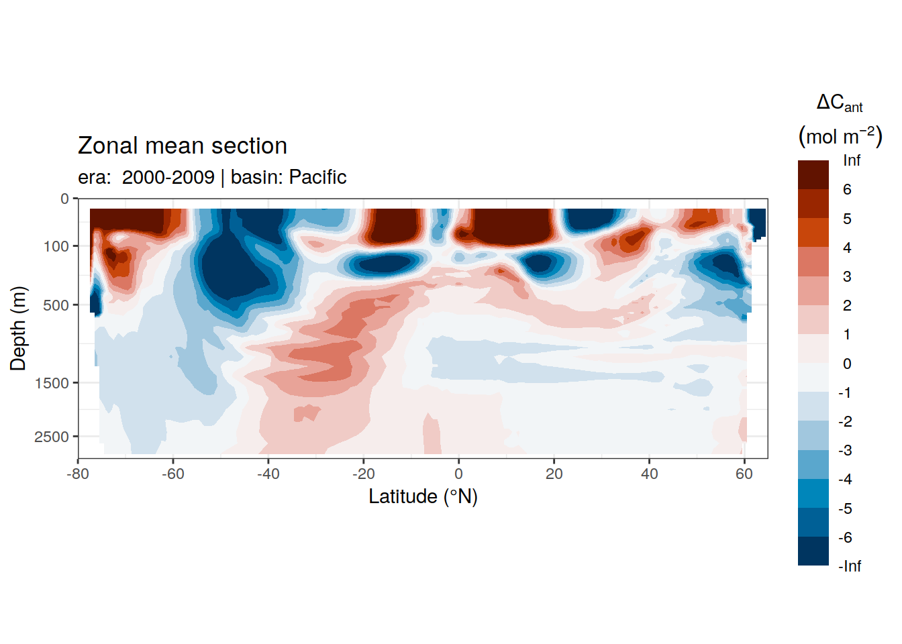
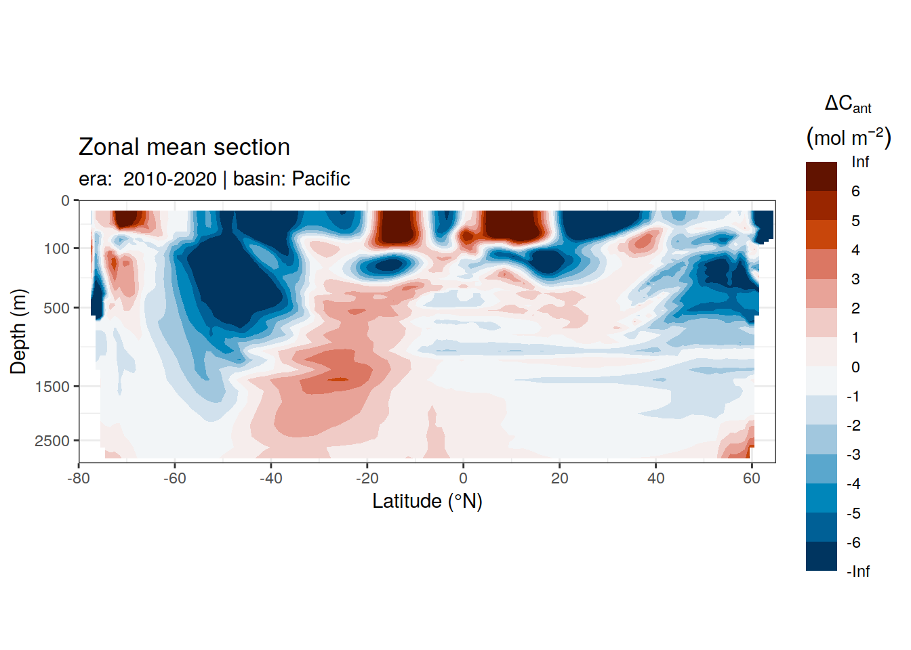

Mapping target variable
Jens Daniel Müller
16 June, 2022
Last updated: 2022-06-16
Checks: 7 0
Knit directory: emlr_obs_v_XXX/
This reproducible R Markdown analysis was created with workflowr (version 1.7.0). The Checks tab describes the reproducibility checks that were applied when the results were created. The Past versions tab lists the development history.
Great! Since the R Markdown file has been committed to the Git repository, you know the exact version of the code that produced these results.
Great job! The global environment was empty. Objects defined in the global environment can affect the analysis in your R Markdown file in unknown ways. For reproduciblity it’s best to always run the code in an empty environment.
The command set.seed(20200707) was run prior to running the code in the R Markdown file. Setting a seed ensures that any results that rely on randomness, e.g. subsampling or permutations, are reproducible.
Great job! Recording the operating system, R version, and package versions is critical for reproducibility.
Nice! There were no cached chunks for this analysis, so you can be confident that you successfully produced the results during this run.
Great job! Using relative paths to the files within your workflowr project makes it easier to run your code on other machines.
Great! You are using Git for version control. Tracking code development and connecting the code version to the results is critical for reproducibility.
The results in this page were generated with repository version d85163e. See the Past versions tab to see a history of the changes made to the R Markdown and HTML files.
Note that you need to be careful to ensure that all relevant files for the analysis have been committed to Git prior to generating the results (you can use wflow_publish or wflow_git_commit). workflowr only checks the R Markdown file, but you know if there are other scripts or data files that it depends on. Below is the status of the Git repository when the results were generated:
Ignored files:
Ignored: .Rhistory
Ignored: .Rproj.user/
Ignored: analysis/figure/
Note that any generated files, e.g. HTML, png, CSS, etc., are not included in this status report because it is ok for generated content to have uncommitted changes.
These are the previous versions of the repository in which changes were made to the R Markdown (analysis/mapping_target_variable.Rmd) and HTML (docs/mapping_target_variable.html) files. If you’ve configured a remote Git repository (see ?wflow_git_remote), click on the hyperlinks in the table below to view the files as they were in that past version.
| File | Version | Author | Date | Message |
|---|---|---|---|---|
| Rmd | d85163e | jens-daniel-mueller | 2022-06-16 | calculated cstar offset predicted vs true |
| html | bb9a531 | jens-daniel-mueller | 2022-06-16 | Build site. |
| Rmd | c6b299a | jens-daniel-mueller | 2022-06-16 | distuiguished data source |
| html | 2d729bf | jens-daniel-mueller | 2022-06-16 | Build site. |
| Rmd | 5765ae4 | jens-daniel-mueller | 2022-06-16 | distuiguished data source |
| html | 0c2ca93 | jens-daniel-mueller | 2022-06-15 | Build site. |
| Rmd | 370ce72 | jens-daniel-mueller | 2022-06-15 | testrun with target variable mapping |
| Rmd | a79ca2c | jens-daniel-mueller | 2021-04-09 | included model data |
| html | 03b6009 | jens-daniel-mueller | 2021-03-23 | removed before copying template |
| html | 1fd8347 | jens-daniel-mueller | 2021-03-23 | Build site. |
| html | f155edd | jens-daniel-mueller | 2021-03-23 | Build site. |
| html | 380d215 | jens-daniel-mueller | 2021-03-21 | Build site. |
| html | 33b385b | jens-daniel-mueller | 2021-03-20 | Build site. |
| html | 330dcd0 | jens-daniel-mueller | 2021-03-20 | Build site. |
| html | 83a13de | jens-daniel-mueller | 2021-03-20 | Build site. |
| html | cf98c6d | jens-daniel-mueller | 2021-03-16 | Build site. |
| html | a1d52ff | jens-daniel-mueller | 2021-03-15 | Build site. |
| html | 0bade3b | jens-daniel-mueller | 2021-03-15 | Build site. |
| html | 27c1f4b | jens-daniel-mueller | 2021-03-14 | Build site. |
| html | af75ebf | jens-daniel-mueller | 2021-03-14 | Build site. |
| html | 5017709 | jens-daniel-mueller | 2021-03-11 | Build site. |
| html | 585b07f | jens-daniel-mueller | 2021-03-11 | Build site. |
| html | 6482ed7 | jens-daniel-mueller | 2021-03-11 | Build site. |
| html | 85a5ed2 | jens-daniel-mueller | 2021-03-10 | Build site. |
| html | 00688a1 | jens-daniel-mueller | 2021-03-05 | Build site. |
| html | 6c0bec6 | jens-daniel-mueller | 2021-03-05 | Build site. |
| html | 3c2ec33 | jens-daniel-mueller | 2021-03-05 | Build site. |
| html | af70b94 | jens-daniel-mueller | 2021-03-04 | Build site. |
| html | 86406d5 | jens-daniel-mueller | 2021-02-24 | Build site. |
| html | 3d3b4cc | jens-daniel-mueller | 2021-02-23 | Build site. |
| html | 7b672f7 | jens-daniel-mueller | 2021-01-11 | Build site. |
| html | e5c81bf | jens-daniel-mueller | 2021-01-07 | Build site. |
| Rmd | fe13638 | jens-daniel-mueller | 2021-01-07 | removed GLODAP gamma filter, target variable mapped by eras+era |
| html | 318609d | jens-daniel-mueller | 2020-12-23 | adapted more variable predictor selection |
| html | 84ddb8b | jens-daniel-mueller | 2020-12-23 | Build site. |
| html | 0aa2b50 | jens-daniel-mueller | 2020-12-23 | remove html before duplication |
| html | 39113c3 | jens-daniel-mueller | 2020-12-23 | Build site. |
| html | 2886da0 | jens-daniel-mueller | 2020-12-19 | Build site. |
| html | 02f0ee9 | jens-daniel-mueller | 2020-12-18 | cleaned up for copying template |
| html | 965dba3 | jens-daniel-mueller | 2020-12-18 | Build site. |
| html | 2792743 | jens-daniel-mueller | 2020-12-18 | Build site. |
| Rmd | 05ef152 | jens-daniel-mueller | 2020-12-18 | rebuild after final cleaning |
| html | 4d3e354 | jens-daniel-mueller | 2020-12-18 | Build site. |
| html | 7bcb4eb | jens-daniel-mueller | 2020-12-18 | Build site. |
| html | d397028 | jens-daniel-mueller | 2020-12-18 | Build site. |
| Rmd | 7e1b1c0 | jens-daniel-mueller | 2020-12-18 | rebuild without na predictors |
| html | 7131186 | jens-daniel-mueller | 2020-12-17 | Build site. |
| html | 22b07fb | jens-daniel-mueller | 2020-12-17 | Build site. |
| html | f3a708f | jens-daniel-mueller | 2020-12-17 | Build site. |
| html | e4ca289 | jens-daniel-mueller | 2020-12-16 | Build site. |
| html | 158fe26 | jens-daniel-mueller | 2020-12-15 | Build site. |
| html | 7a9a4cb | jens-daniel-mueller | 2020-12-15 | Build site. |
| html | 61b263c | jens-daniel-mueller | 2020-12-15 | Build site. |
| html | 4d612dd | jens-daniel-mueller | 2020-12-15 | Build site. |
| Rmd | e7e5ff1 | jens-daniel-mueller | 2020-12-15 | rebuild with eMLR target variable selection |
1 Scope
Map 3d fields of the predicted target variable (either tco2, cstar or cstar_tref) based on fitted MLRs and climatological fields of predictor variables. In contrast to the direct Cant calculation based on coefficient differences, we apply here the fitted coefficients directly. Cant could also be estimates as the differences between the target variable fields mapped here.
2 Required data
2.1 Cstar mod_truth
dcant_3d_cstar <-
read_csv(paste(path_version_data,
"dcant_3d_cstar.csv", sep = ""))2.2 Predictor fields
Currently, we use following combined predictor fields:
- WOA18: S, T, and derived variables
- GLODAP16: Oxygen, PO4, NO3, Silicate, and derived variables
predictors <-
read_csv(paste(path_version_data,
"W18_st_G16_opsn.csv",
sep = ""))2.3 MLR models
lm_best_target <-
read_csv(paste(path_version_data,
"lm_best_target.csv",
sep = ""))2.4 Others
tref <-
read_csv(paste(path_version_data,
"tref.csv",
sep = ""))3 Join MLR + climatologies
# remove predictor variable from model
lm_best_target <- lm_best_target %>%
mutate(model = str_remove(model, paste(params_local$MLR_target, "~ ")))
# join predictors and MLR
target <- full_join(predictors, lm_best_target)
rm(predictors, lm_best_target)4 Map target variable
4.1 Apply MLRs to predictor
target <- b_target_model(target)
target <- target %>%
select(data_source,
lon,
lat,
depth,
era,
basin,
basin_AIP,
gamma,
params_local$MLR_target)4.2 Average model target variable
target_average <- m_target_model_average(target)
target_average <- m_cut_gamma(target_average, "gamma")
rm(target)4.3 Zonal mean sections
For each basin and era combination, the zonal mean of the target variable is calculated. Likewise, sd is calculated for the averaging of the mean basin fields.
target_average_zonal <- target_average %>%
group_by(data_source, era) %>%
nest() %>%
mutate(zonal = map(.x = data, ~m_zonal_mean_sd(.x))) %>%
select(-data) %>%
unnest(zonal)
target_average_zonal <- m_cut_gamma(target_average_zonal, "gamma_mean")
target_average_zonal %>%
ggplot(aes_string(paste0(params_local$MLR_target, "_mean"), col = "era")) +
geom_density() +
facet_grid(. ~ data_source)
target_average_zonal %>%
group_by(basin_AIP, data_source, era) %>%
group_split() %>%
# head(1) %>%
map(
~ p_section_zonal_continous_depth(
df = .x,
var = paste0(params_local$MLR_target, "_mean"),
breaks = seq(740,940,20),
plot_slabs = "n",
subtitle_text = paste(
"data_source: ",
unique(.x$data_source),
"| era: ",
unique(.x$era),
"| basin:",
unique(.x$basin_AIP)
)
)
)[[1]]
[[2]]
[[3]]
[[4]]
[[5]]
[[6]]
[[7]]
| Version | Author | Date |
|---|---|---|
| bb9a531 | jens-daniel-mueller | 2022-06-16 |
[[8]]
| Version | Author | Date |
|---|---|---|
| bb9a531 | jens-daniel-mueller | 2022-06-16 |
[[9]]
| Version | Author | Date |
|---|---|---|
| bb9a531 | jens-daniel-mueller | 2022-06-16 |
[[10]]
| Version | Author | Date |
|---|---|---|
| bb9a531 | jens-daniel-mueller | 2022-06-16 |
[[11]]
| Version | Author | Date |
|---|---|---|
| bb9a531 | jens-daniel-mueller | 2022-06-16 |
[[12]]
| Version | Author | Date |
|---|---|---|
| bb9a531 | jens-daniel-mueller | 2022-06-16 |
4.4 Profiles
For each basin, the mean (+ min and max) dcant profile is calculated, again for all vs positive only values. Likewise, sd is calculated for the averaging of the mean basin fields.
var <- sym(params_local$MLR_target)
target_average_profile <- target_average %>%
mutate(area = earth_surf(lat, lon),
!!paste0(var, "_scaled") :=
!!var * area) %>%
group_by(data_source, basin_AIP, depth) %>%
summarise(!!paste0(var, "_sd") := sqrt(Hmisc::wtd.var(!!var, area, na.rm = TRUE)),
!!var := sum(!!sym(paste0(var, "_scaled"))) / sum(area)) %>%
ungroup()target_average_basin_MLR <-
full_join(
target_average %>% select(data_source, lon, lat, depth, !!var),
basinmask %>% select(MLR_basins, basin, lon, lat)
) %>%
mutate(area = earth_surf(lat, lon),
!!paste0(var, "_scaled") :=
!!var * area) %>%
drop_na() %>%
group_by(data_source, basin, MLR_basins, depth) %>%
summarise(!!paste0(var, "_sd") := sqrt(Hmisc::wtd.var(!!var, area, na.rm = TRUE)),
!!var := sum(!!sym(paste0(var, "_scaled"))) / sum(area)) %>%
ungroup()5 Join true C*
unique(tref$era[1])[1] "1989-1999"dcant_3d_cstar <- dcant_3d_cstar %>%
mutate(data_source = if_else(data_source == "po4",
"phosphate",
"nitrate")) %>%
filter(data_source == params_local$cstar_nutrient)
dcant_3d_cstar <- dcant_3d_cstar %>%
select(lon:cstar_tref_2, -c(data_source, method)) %>%
pivot_longer(starts_with("cstar_tref_"),
values_to = "cstar_tref_mod_truth",
names_to = "era",
names_prefix = "cstar_tref_") %>%
mutate(era = if_else(era == "1",
unique(tref$era[1]),
unique(tref$era[2])))
target_bias <- inner_join(
target_average %>%
filter(data_source == "mod") %>%
select(-data_source),
dcant_3d_cstar
)
target_bias <- target_bias %>%
mutate(dcant = cstar_tref - cstar_tref_mod_truth) %>%
select(lat, lon, depth, basin_AIP, era, gamma, dcant)5.1 Zonal mean sections
For each basin and era combination, the zonal mean of the target variable is calculated. Likewise, sd is calculated for the averaging of the mean basin fields.
target_bias_zonal <- target_bias %>%
group_by(era) %>%
nest() %>%
mutate(zonal = map(.x = data, ~m_zonal_mean_sd(.x))) %>%
select(-data) %>%
unnest(zonal)
target_bias_zonal <- m_cut_gamma(target_bias_zonal, "gamma_mean")
target_bias_zonal %>%
ggplot(aes(dcant_mean, col = era)) +
geom_density()
target_bias_zonal %>%
group_by(basin_AIP, era) %>%
group_split() %>%
# head(1) %>%
map(
~ p_section_zonal_continous_depth(
df = .x,
var = "dcant_mean",
col = "divergent",
plot_slabs = "n",
subtitle_text = paste(
"era: ",
unique(.x$era),
"| basin:",
unique(.x$basin_AIP)
)
)
)[[1]]
[[2]]
[[3]]
[[4]]
[[5]]
[[6]]
6 Write csv
target_average %>%
write_csv(paste(path_version_data,
"target_3d.csv",
sep = ""))
target_average_zonal %>%
write_csv(paste(path_version_data,
"target_zonal.csv",
sep = ""))
target_average_profile %>%
write_csv(paste(path_version_data,
"target_average_profile.csv", sep = ""))
target_average_basin_MLR %>%
write_csv(paste(path_version_data,
"target_average_profile_basin_MLR.csv", sep = ""))
sessionInfo()R version 4.1.2 (2021-11-01)
Platform: x86_64-pc-linux-gnu (64-bit)
Running under: openSUSE Leap 15.3
Matrix products: default
BLAS: /usr/local/R-4.1.2/lib64/R/lib/libRblas.so
LAPACK: /usr/local/R-4.1.2/lib64/R/lib/libRlapack.so
locale:
[1] LC_CTYPE=en_US.UTF-8 LC_NUMERIC=C
[3] LC_TIME=en_US.UTF-8 LC_COLLATE=en_US.UTF-8
[5] LC_MONETARY=en_US.UTF-8 LC_MESSAGES=en_US.UTF-8
[7] LC_PAPER=en_US.UTF-8 LC_NAME=C
[9] LC_ADDRESS=C LC_TELEPHONE=C
[11] LC_MEASUREMENT=en_US.UTF-8 LC_IDENTIFICATION=C
attached base packages:
[1] stats graphics grDevices utils datasets methods base
other attached packages:
[1] colorspace_2.0-2 marelac_2.1.10 shape_1.4.6 ggforce_0.3.3
[5] metR_0.11.0 scico_1.3.0 patchwork_1.1.1 collapse_1.7.0
[9] forcats_0.5.1 stringr_1.4.0 dplyr_1.0.7 purrr_0.3.4
[13] readr_2.1.1 tidyr_1.1.4 tibble_3.1.6 ggplot2_3.3.5
[17] tidyverse_1.3.1 workflowr_1.7.0
loaded via a namespace (and not attached):
[1] ellipsis_0.3.2 rprojroot_2.0.2 htmlTable_2.4.0
[4] base64enc_0.1-3 fs_1.5.2 rstudioapi_0.13
[7] farver_2.1.0 bit64_4.0.5 fansi_1.0.2
[10] lubridate_1.8.0 xml2_1.3.3 splines_4.1.2
[13] knitr_1.37 polyclip_1.10-0 Formula_1.2-4
[16] jsonlite_1.7.3 gsw_1.0-6 broom_0.7.11
[19] cluster_2.1.2 dbplyr_2.1.1 png_0.1-7
[22] compiler_4.1.2 httr_1.4.2 backports_1.4.1
[25] assertthat_0.2.1 Matrix_1.4-0 fastmap_1.1.0
[28] cli_3.1.1 later_1.3.0 tweenr_1.0.2
[31] htmltools_0.5.2 tools_4.1.2 gtable_0.3.0
[34] glue_1.6.0 Rcpp_1.0.8 cellranger_1.1.0
[37] jquerylib_0.1.4 vctrs_0.3.8 xfun_0.29
[40] ps_1.6.0 rvest_1.0.2 lifecycle_1.0.1
[43] oce_1.5-0 getPass_0.2-2 MASS_7.3-55
[46] scales_1.1.1 vroom_1.5.7 hms_1.1.1
[49] promises_1.2.0.1 parallel_4.1.2 RColorBrewer_1.1-2
[52] yaml_2.2.1 gridExtra_2.3 sass_0.4.0
[55] rpart_4.1-15 latticeExtra_0.6-29 stringi_1.7.6
[58] highr_0.9 checkmate_2.0.0 rlang_1.0.2
[61] pkgconfig_2.0.3 evaluate_0.14 lattice_0.20-45
[64] SolveSAPHE_2.1.0 htmlwidgets_1.5.4 labeling_0.4.2
[67] bit_4.0.4 processx_3.5.2 tidyselect_1.1.1
[70] here_1.0.1 seacarb_3.3.0 magrittr_2.0.1
[73] R6_2.5.1 generics_0.1.1 Hmisc_4.6-0
[76] DBI_1.1.2 pillar_1.6.4 haven_2.4.3
[79] whisker_0.4 foreign_0.8-82 withr_2.4.3
[82] survival_3.2-13 nnet_7.3-17 modelr_0.1.8
[85] crayon_1.4.2 utf8_1.2.2 tzdb_0.2.0
[88] rmarkdown_2.11 jpeg_0.1-9 grid_4.1.2
[91] readxl_1.3.1 isoband_0.2.5 data.table_1.14.2
[94] callr_3.7.0 git2r_0.29.0 reprex_2.0.1
[97] digest_0.6.29 httpuv_1.6.5 munsell_0.5.0
[100] viridisLite_0.4.0 bslib_0.3.1